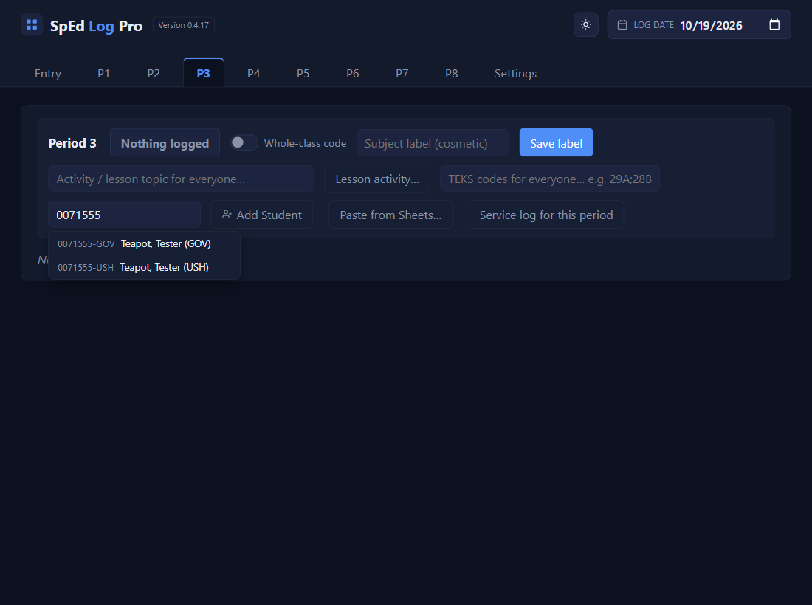
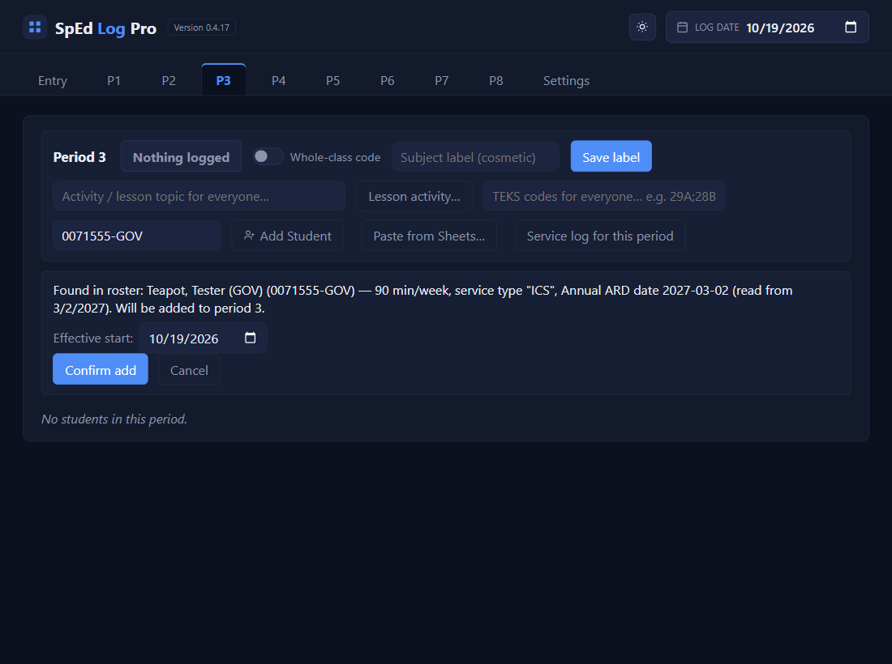
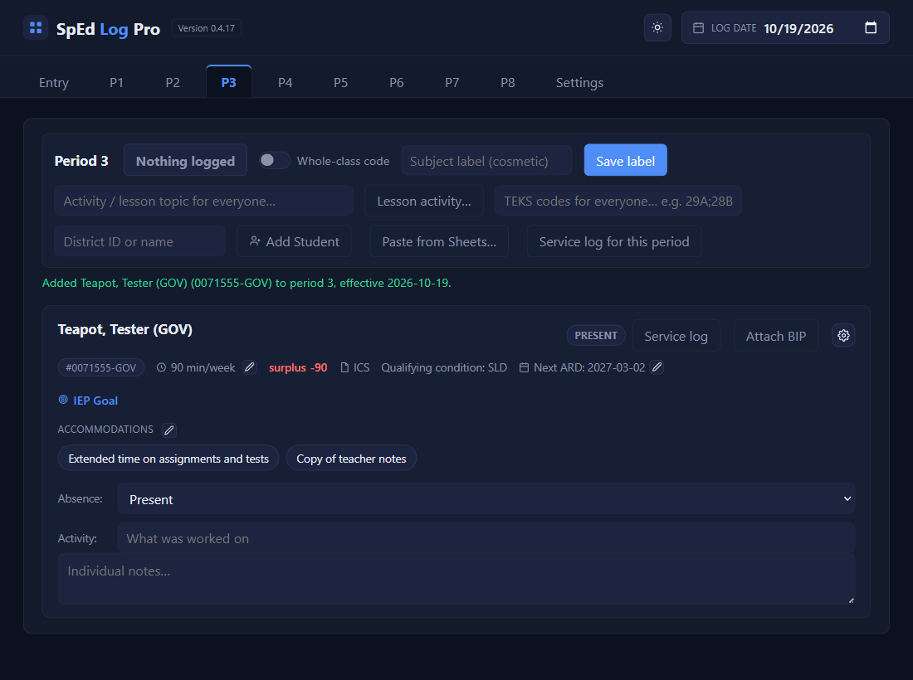
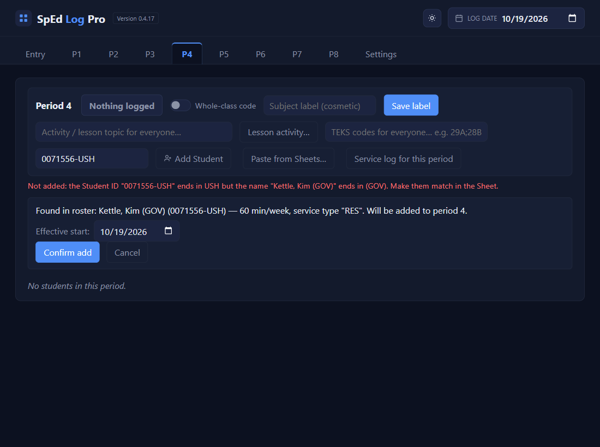

A student in two of your classes
In your Sheet, make one row per class
Copy the student's row so there are two. On each, add the same class code to the end of the Student ID (a hyphen, then letters, or letters and numbers) and, in brackets, to the end of the name. Give each row that class's minutes, accommodations, and goal. Capitals don't matter; spelling does.
| Student ID | Name: Last, First | min per week | … |
|---|---|---|---|
| 0071555-GOV | Teapot, Tester (GOV) | 90 | … |
| 0071555-USH | Teapot, Tester (USH) | 120 | … |
Download the roster into the Roster folder
File → Download → Comma Separated Values, then replace the old CSV in C:\SpEd Log Pro Roster (see Your roster).
On the first class’s tab, type the shared number and pick that class’s row
Here on P3: type 0071555 in District ID or name. Both rows drop down. Pick -GOV.

Check the start date and Confirm add
The line names the row and the period. Then go to the other class's tab (here P4) and do steps 3 and 4 again, picking -USH.

Each class is now its own student
Its own card, minutes, accommodations, goal, and Service log. Paste each one's service log into that class's tab of the real log. The pasted text never includes the ID, so the log itself is unaffected.

✓ You'll know it worked
- A card on each tab: Teapot, Tester (GOV) on P3, Teapot, Tester (USH) on P4.
- Each has its own minutes.
✕ Avoid these
- Changing only the name. The app tells students apart by ID, so the code goes on both.
- Already in the app as plain 0071555? Add the two new rows, then remove the old record with its gear button (see Leaves or comes back).
- The cost: ARD changes, missed days, removals, and the August re-add happen once per record.
⚠ If you see this
Not added: the Student ID "0071556-USH" ends in USH but the name "Kettle, Kim (GOV)" ends in (GOV). Make them match in the Sheet.The two codes differ. Fix the row in your Sheet, download the CSV again, and add it again.
